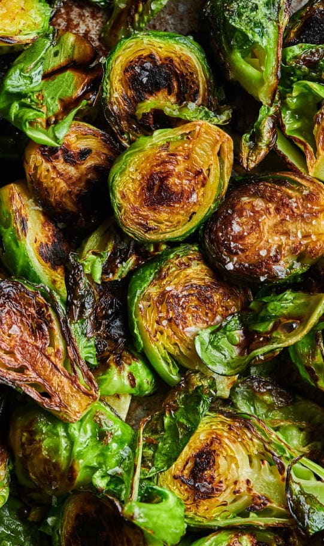

Brussels Sprouts

Description
I'll teach you how to make the best damn charred brussels sprouts you've ever had.
You ready?
Ingredients
- Brussels Sprouts
- Parmesan Cheese
- Sea Salt
- Garlic
- Olive Oil
Steps
- Cut brussels sprouts into manageable bites and put into glass baking pan.
- Mince garlic and distribute over brussels sprouts.
- Pour a load of parmesan cheese over brussels sprouts.
- Add salt.
- Mix together.
- Roast alongside the salmon for 2o-25 minutes.